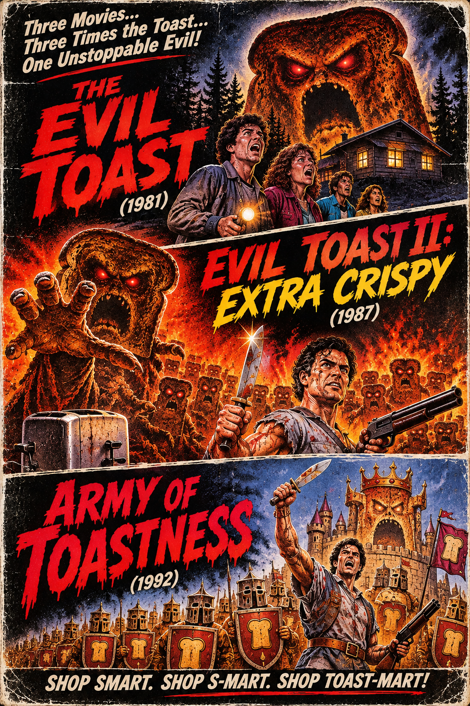
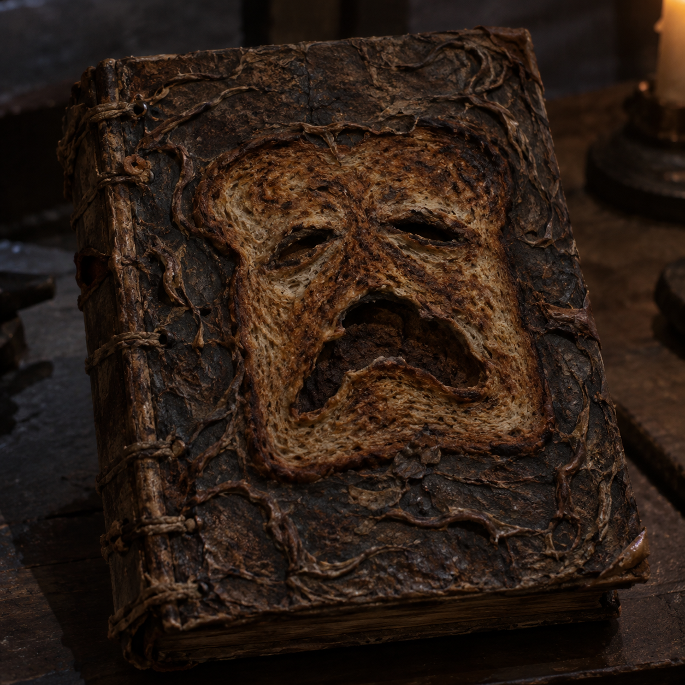
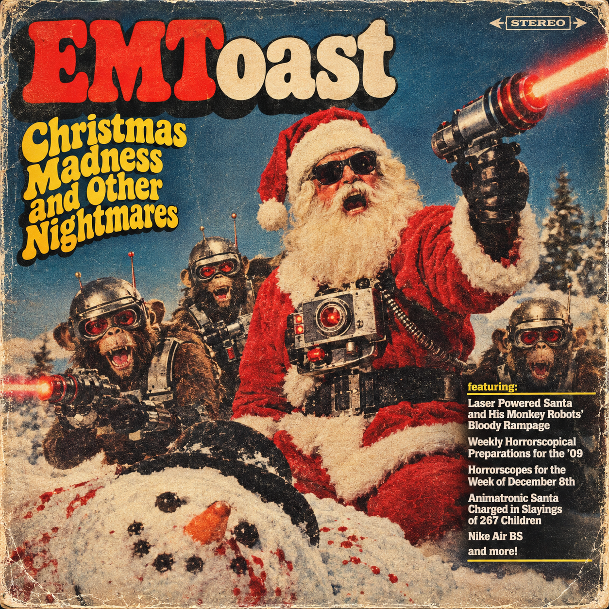
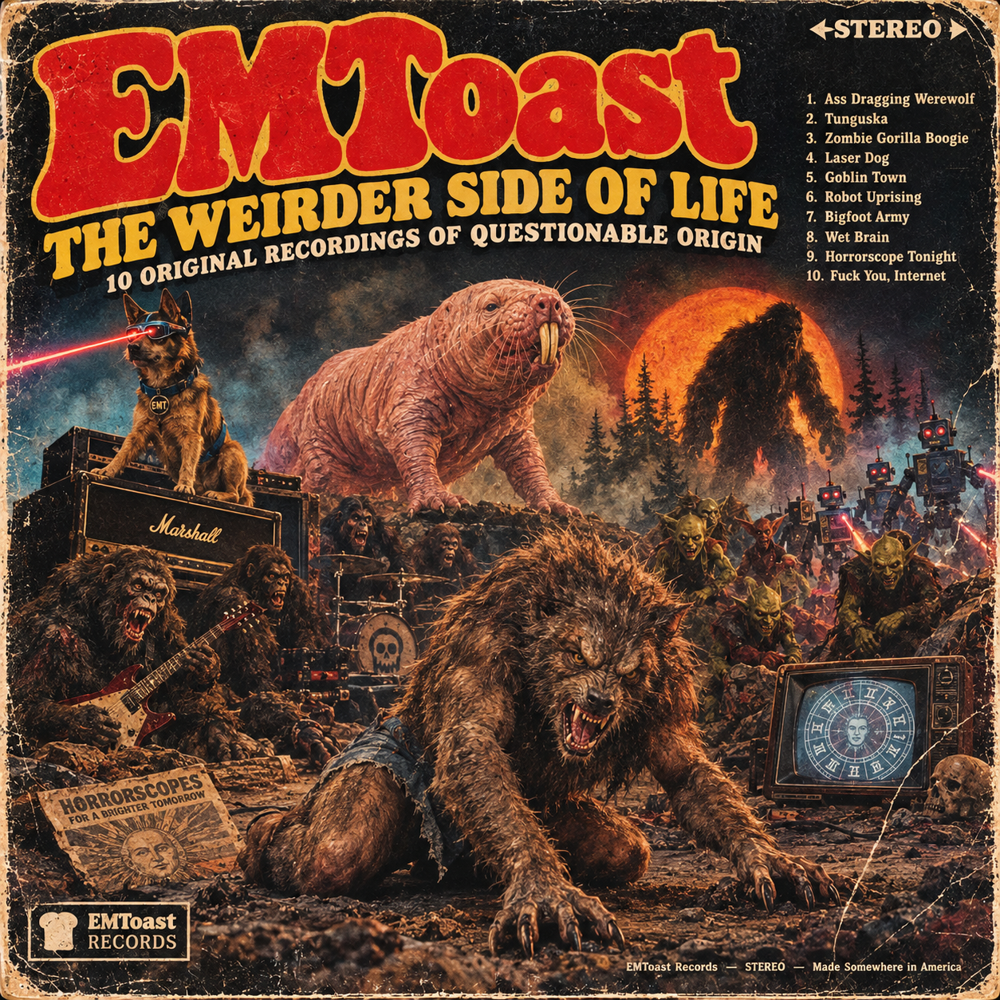

The Evil Toast Trilogy and Necronomicon





If you watch Evil Dead, Evil Dead 2, and Army of Darkness you will notice the Necronomicon is slightly different in each one. So why not a toast one. You know in the alternate universe where everything is toast.
The Evil Toast (1981) – Five friends head to a remote cabin in the woods for a relaxing weekend, only to discover the Necronomicon, an ancient book of the dead made entirely of burnt toast. After accidentally unleashing its evil powers, they find themselves battling possessed toast people, demonic toast creatures, and increasingly angry slices of toast. Everyone is toast, the good guys, the bad guys, and even the cabin itself. Nobody escapes the toaster!
Evil Toast II: Extra Crispy (1987) – Ash returns to the cabin for another round of toasted terror, only to discover that the toast people are back, crispier, darker, and more butter-obsessed than ever. The Necronomicon is still a giant slice of evil toast, the furniture is toast, the demons are toast, and even Ash's own hand seems to be turning into toast. Armed with a butter knife, a shotgun, and a toaster full of rage, Ash must fight his way through an endless army of possessed toast before he becomes nothing more than a burnt piece of breakfast.
Army of Toastness (1992) – Transported to medieval England, Ash discovers an entire civilization of toast, including toast knights, toast villagers, toast peasants, and an army of undead toast warriors led by the dreaded Lord Burnt Toast. Armed with a butter knife hand and a boomstick, he must battle the forces of burnt bread, defeat the evil Toast King, and save a world where everyone is toast, everything is toast, and the only thing worse than being toast is being double-toasted. Shop smart. Shop S-Mart. Shop Toast-Mart!
Related posts

EMToast: Future Trash Album
We got the whole 2009 crew together for this electroclash compilation.

EMToast Christmas Madness and Other Nightmares: The Album
Merry Christmas to all! From Laster Powered Santa and his Monkey Robots!

EMToast: The Album Featuring Ass Dragging Werewolf
The perfect embodiment of EMToast 2009 as a record album. Featuring classics like Ass Dragging Werewolf, Tunguska Creature, Horrorscopes and…
Fucked up toast is born
well i've finally done it. i've started a site all about toast.